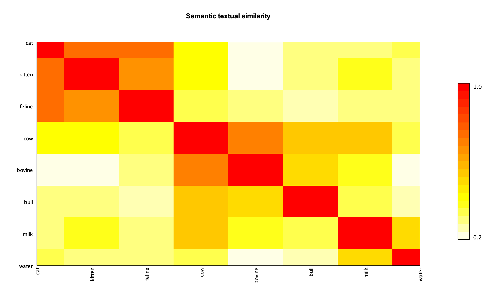
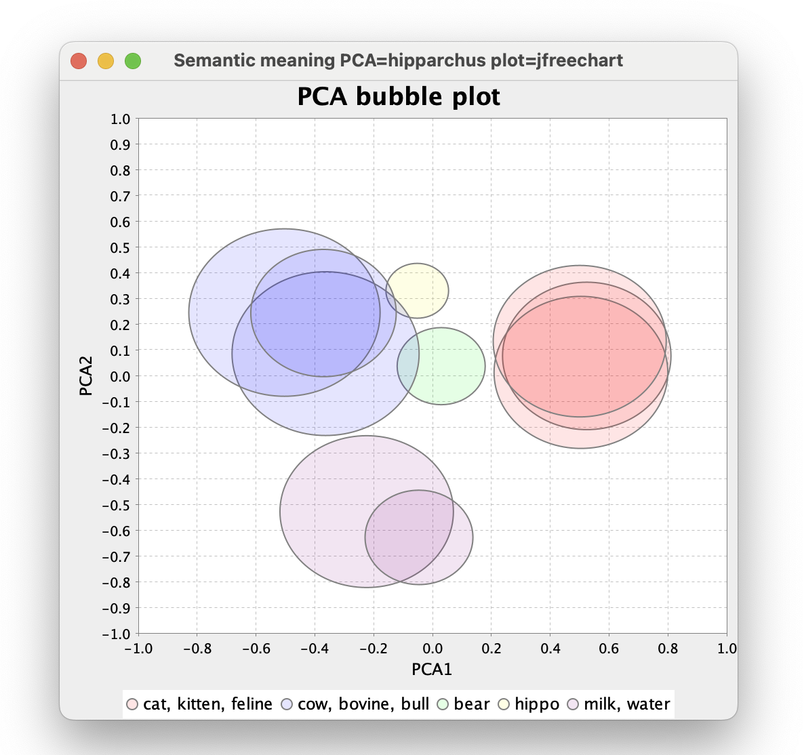
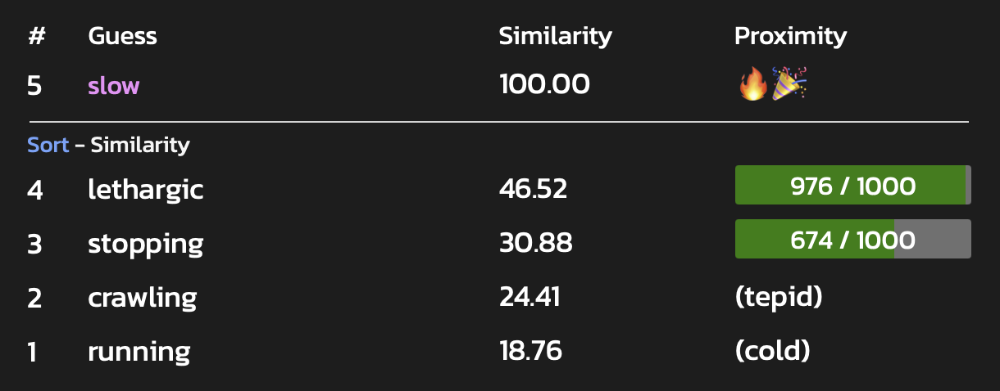
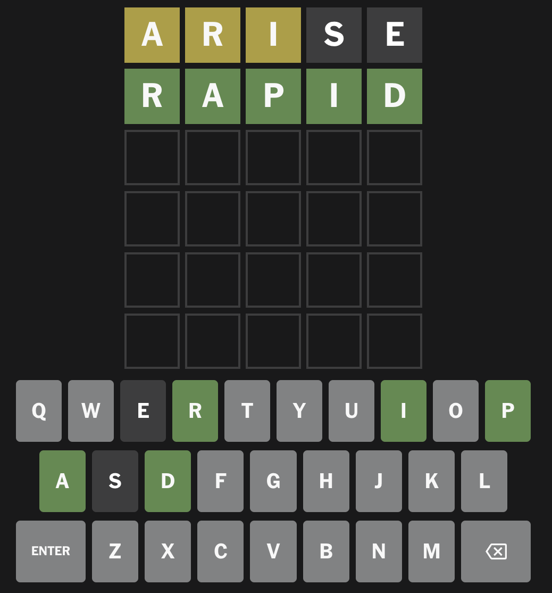
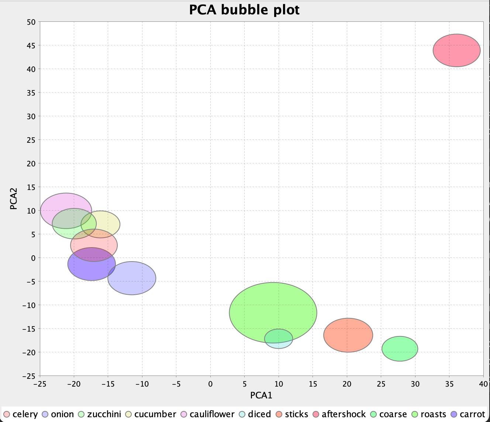

Groovy Text Similarity

Published: 2025-02-18 08:30PM
Introduction
Let’s build a wordle-like word guessing game. But instead of telling you how many correct and misplaced letters, we’ll give you more hints, but slightly less obvious ones, to make it a little more challenging!
We won’t (directly) even tell you how many letters are in the word, but we’ll give hints like:
* How close your guess sounds like the hidden word. * How close your guess is to the meaning of the hidden word. * Instead of correct and misplaced letters, we’ll give you some distance and similarity measures which will give you clues about how many correct letters you have, whether you have the correct letters in order, and so forth.
So, we’re thinking of a game that is a cross between other games. Guessing letters of a word like Wordle, but with less direct clues, sort of like how a black key peg in Master Mind indicates that you have one of the colored code pegs in the correct position, but you don’t know which one. It also will incorporate some of the ideas behind word-guessing games like Semantle, or Proximity which also use semantic meaning.
Our goals here aren’t to polish a production ready version of the game, but to:
-
Give you insight into string-metric similarity algorithms (like those in the latest Apache Commons Text release)
-
Give you insight into phonetic similarity algorithms (like those in the latest Apache Commons Codec release)
-
Give you insight into semantic textual similarity (STS) algorithms powered by machine learning and deep neural networks using frameworks like PyTorch, TensorFlow, and Word2vec, and technologies like large language models (LLMs) and BERT
-
Highlight how easy it is to play with the above technologies using Apache Groovy
If you are new to Groovy, consider checking out this Groovy game building tutorial first.
Background
String similarity tries to answer the question: is one word (or phrase, sentence, paragraph, document) the same as, or similar to, another. This is an important capability in many scenarios involving searching, asking questions, or invoking commands. It can help answer questions like:
-
Are two Jira/GitHub issues duplicates of the same issue?
-
Are two (or more) customer records actually for the same customer?
-
Is some social media topic trending because multiple posts which, even though they contain slightly different words, are really about the same thing?
-
Can I understand some natural language customer request even when it contains spelling mistakes?
-
As a doctor, can I find a medical journal paper discussing a patient’s medical diagnosis/symptoms/treatment?
-
As a programmer, can I find a solution to my coding problem?
When comparing two things to see if they are the same, we often want to incorporate a certain amount of fuzziness:
-
Are two words the same except for case? E.g.
catandCat. -
Are two words the same except for spelling variations? E.g.
Clare,Claire, andClair. -
Are two words the same except for a misspelling or typo? E.g.
mathematiks, andcomputter. -
Are two phrases the same except for order and/or inconsequential words? E.g.
the red carandthe car of colour red -
Do the words sound the same? E.g.
there,their, andthey’re -
Are the words variations that mean the same (or similar) thing? E.g.
cow,bull,calf,bovine,cattle, orlivestock
Very simple cases can typically be explicitly catered for by hand, e.g. using String library methods or regular expressions:
assert 'Cat'.equalsIgnoreCase('cat')
assert ['color', 'Colour'].every { it =~ '[Cc]olou?r' }Handling cases explicitly like this soon becomes tedious. We’ll look at some libraries which can help us handle comparisons in more general ways.
First, we’ll examine two libraries for performing similarity matching using string metrics:
-
info.debatty:java-string-similarity -
org.apache.commons:commons-textApache Commons Text
Then we’ll look at some libraries for phonetic matching:
-
commons-codec:commons-codecApache Commons Codec for Soundex and Metaphone -
org.openrefine:mainOpenRefine for Metaphone3
Then we’ll look at some deep learning options for semantic matching:
-
org.deeplearning4j:deeplearning4j-nlpfor GloVe, ConceptNet, and fastText models -
ai.djlwith Pytorch for a universal-sentence-encoder model and TensorFlow with an AnglE model
Simple String Metrics
String metrics provide some measure of the sameness of the characters in words (or phrases).
These algorithms generally compute similarity or distance (inverse similarity). The two are related.
Consider cat vs hat. One "edit" is required to change from one word to the other according
to the Levenshtein algorithm (described shortly). So, we say cat is distance one away from hat.
We can alternatively produce a normalized similarity value using (word_size - distance) / word_size,
where word_size is the size of the largest of the two words. So we’d get a Levenshtein
similarity measure of 2/3 (or 0.67). In other words, cat is 67% similar to hat.
For our game, we’ll sometimes want the distance, other times we’ll use the similarity.
There are numerous tutorials (see further information) that describe various string metric algorithms. We won’t replicate those tutorials but here is a summary of some common ones:
| Algorithm | Description |
|---|---|
The minimum number of "edits" (inserts, deletes, or substitutions) required to convert from one word to another.
Distance between |
|
Defines a ratio between two sample sets. This could be sets of
characters in a word, or words in a sentence, or sets of |
|
Similar to Levenshtein but insertions and deletions aren’t allowed.
Distance between |
|
The maximum number of characters appearing in order in the two words, not necessarily consecutively.
LCS of |
|
This is a metric also measuring edit distance but weights edits to favor
words with common prefixes.
JaroWinkler of |
You may be wondering what practical use these algorithms might have. Here are just a few use cases:
-
Longest common subsequence is the algorithm behind the popular
difftool -
Hamming distance is an important metric when designing algorithms for error detection, error correction and checksums
-
Levenshtein is used in search engines (like Apache Lucene and Apache Solr) for fuzzy matching searches and for spelling correction software
Groovy has in fact a built-in example of using the Damerau-Levenshtein distance metric.
This variant counts transposing two adjacent characters within the original word as one "edit".
The Levenshtein distance of fish and ifsh` is 2.
The Damerau-Levenshtein distance of fish and ifsh` is 1.
As an example, for this code:
'foo'.toUpper()Groovy will give this error message:
No signature of method: java.lang.String.toUpper() is applicable for argument types: () values: [] Possible solutions: toUpperCase(), toURI(), toURL(), toURI(), toURL(), toSet()
And this code:
'foo'.touppercase()Gives this error:
No signature of method: java.lang.String.touppercase() is applicable for argument types: () values: [] Possible solutions: toUpperCase(), toUpperCase(java.util.Locale), toLowerCase(), toLowerCase(java.util.Locale)
The values returned as possible solutions are the best methods found for the String class according the Damerau-Levenshtein distance but with some smarts added to cater for closest matching parameters. This includes Groovy’s String extension methods and (if using dynamic metaprogramming) any methods added at runtime.
|
Note
|
You’ll frequently get feedback about using incorrect methods from your IDE or the Groovy compiler (with static checking enabled). But having this feedback provides a great fallback especially when using Groovy scripts outside an IDE. |
Let’s now look at some examples of running various string metric algorithms.
We’ll use algorithms from Apache Commons Text and the info.debatty:java-string-similarity
library.
Both these libraries support numerous string metric classes. Methods to calculate both similarity and distance are provided. We’ll look at both in turn.
First, let’s look at some similarity measures. These typically range from 0 (meaning no similarity) to 1 (meaning they are the same).
We’ll look at the following subset of similarity measures from the two libraries. Note that there is a fair bit of overlap between the two libraries. We’ll do a little cross-checking between the two libraries but won’t compare them exhaustively.
var simAlgs = [
NormalizedLevenshtein: new NormalizedLevenshtein()::similarity,
'Jaccard (debatty k=1)': new Jaccard(1)::similarity,
'Jaccard (debatty k=2)': new Jaccard(2)::similarity,
'Jaccard (debatty k=3)': new Jaccard()::similarity,
'Jaccard (commons text k=1)': new JaccardSimilarity()::apply,
'JaroWinkler (debatty)': new JaroWinkler()::similarity,
'JaroWinkler (commons text)': new JaroWinklerSimilarity()::apply,
RatcliffObershelp: new RatcliffObershelp()::similarity,
SorensenDice: new SorensenDice()::similarity,
Cosine: new Cosine()::similarity,
]In the sample code, we run these measures for the following pairs:
var pairs = [
['there', 'their'],
['cat', 'hat'],
['cat', 'kitten'],
['cat', 'dog'],
['bear', 'bare'],
['bear', 'bean'],
['pair', 'pear'],
['sort', 'sought'],
['cow', 'bull'],
['winners', 'grinners'],
['knows', 'nose'],
['ground', 'aground'],
['grounds', 'aground'],
['peeler', 'repeal'],
['hippo', 'hippopotamus'],
['elton john', 'john elton'],
['elton john', 'nhoj notle'],
['my name is Yoda', 'Yoda my name is'],
['the cat sat on the mat', 'the fox jumped over the dog'],
['poodles are cute', 'dachshunds are delightful']
]We can run our algorithms on our pairs like follows:
pairs.each { wordPair ->
var results = simAlgs.collectValues { alg -> alg(*wordPair) }
// display results ...
}Here is the output from the first pair:
there VS their
JaroWinkler (commons text) 0.91 ██████████████████
JaroWinkler (debatty) 0.91 ██████████████████
Jaccard (debatty k=1) 0.80 ████████████████
Jaccard (commons text k=1) 0.80 ████████████████
RatcliffObershelp 0.80 ████████████████
NormalizedLevenshtein 0.60 ████████████
Cosine 0.33 ██████
Jaccard (debatty k=2) 0.33 ██████
SorensenDice 0.33 ██████
Jaccard (debatty k=3) 0.20 ████
We have color coded the bars in the chart with 80% and above colored green deeming it a "match" in terms of similarity. You could choose some different threshold for matching depending on your use case.
We can see that the different algorithms rank the similarity of the two words differently.
Rather than show the results of all algorithms for all pairs, let’s just show a few highlights that give us insight into which similarity measures might be most useful for our game.
A first observation is the usefulness of Jaccard with k=1 (looking at the set of individual letters).
Here we can imagine that bear might be our guess and bare might be the hidden word.
bear VS bare
Jaccard (debatty k=1) 1.00 ████████████████████
Here we know that we have correctly guessed all the letters!
For another example:
cow VS bull
Jaccard (debatty k=1) 0.00 ▏
We can rule out all letters from our guess!
What about Jaccard looking at multi-letter sequences? Well, if you were trying to determine
whether a social media account @elton_john might be the same person as the email john.elton@gmail.com,
Jaccard with higher indexes would help you out.
elton john VS john elton
Jaccard (debatty k=1) 1.00 ████████████████████
Jaccard (debatty k=2) 0.80 ████████████████
Jaccard (debatty k=3) 0.45 █████████
elton john VS nhoj notle
Jaccard (debatty k=1) 1.00 ████████████████████
Jaccard (debatty k=2) 0.00 ▏
Jaccard (debatty k=3) 0.00 ▏
Note that for "Elton John" backwards, Jaccard with higher values of k quickly drops to zero but just swapping the words (like our social media account and email with punctuation removed) remains high. So higher value values of k for Jaccard definitely have their place but are perhaps not needed for our game. Dealing with k sequential letters (also referred to as n sequential letters) is common. There is in fact a special term n-grams for such sequences. While n-grams play an important role in measuring similarity, it doesn’t add a lot of value for our game. So we’ll just use Jaccard with k=1 in the game.
Let’s now look at JaroWinkler. This measure looks at the number of edits but calculates a weighted score penalising changes at the start, which in turn means that words with common prefixes have higher similarity scores.
If we look at the words 'superstar' and 'supersonic', 5 of the 11 distinct letters are in common (hence the Jaccard score of 5/11 or 0.45), but since they both start with the same 6 letters, it scores a high JaroWinkler value of 0.90.
Swapping to 'partnership' and 'leadership', 7 of the 11 distinct letters are in common hence the higher Jaccard score of 0.64, but even though they both end with the same 6 characters, it gives us a lower JaroWinkler score of 0.73.
superstar VS supersonic
JaroWinkler (debatty) 0.90 ██████████████████
Jaccard (debatty k=1) 0.45 █████████
partnership VS leadership
JaroWinkler (debatty) 0.73 ██████████████
Jaccard (debatty k=1) 0.64 ████████████
Perhaps it could be interesting to know if the start of our guess is close to the hidden word. So we’ll use the JaroWinkler measure in our game.
Let’s now swap over to distance measures.
Let’s first explore the range of distance measures we have available to us:
var distAlgs = [
NormalizedLevenshtein: new NormalizedLevenshtein()::distance,
'WeightedLevenshtein (t is near r)': new WeightedLevenshtein({ char c1, char c2 ->
c1 == 't' && c2 == 'r' ? 0.5 : 1.0
})::distance,
Damerau: new Damerau()::distance,
OptimalStringAlignment: new OptimalStringAlignment()::distance,
LongestCommonSubsequence: new LongestCommonSubsequence()::distance,
MetricLCS: new MetricLCS()::distance,
'NGram(2)': new NGram(2)::distance,
'NGram(4)': new NGram(4)::distance,
QGram: new QGram(2)::distance,
CosineDistance: new CosineDistance()::apply,
HammingDistance: new HammingDistance()::apply,
JaccardDistance: new JaccardDistance()::apply,
JaroWinklerDistance: new JaroWinklerDistance()::apply,
LevenshteinDistance: LevenshteinDistance.defaultInstance::apply,
]Not all of these metrics are normalized, so graphing them like before isn’t as useful. Instead, we will have a set of predefined phrases (similar to the index of a search engine), and we will find the closest phrases to some query.
Here are our predefined phrases:
var phrases = [
'The sky is blue',
'The blue sky',
'The blue cat',
'The sea is blue',
'Blue skies following me',
'My ferrari is red',
'Apples are red',
'I read a book',
'The wind blew',
'Numbers are odd or even',
'Red noses',
'Read knows',
'Hippopotamus',
]Now, let’s use the query The blue car. We’ll find the distance from the query to each of the
candidates phrases and return the closest three. Here are the results for The blue car:
NormalizedLevenshtein: The blue cat (0.08), The blue sky (0.25), The wind blew (0.62) WeightedLevenshtein (t is near r): The blue cat (0.50), The blue sky (3.00), The wind blew (8.00) Damerau: The blue cat (1.00), The blue sky (3.00), The wind blew (8.00) OptimalStringAlignment: The blue cat (1.00), The blue sky (3.00), The wind blew (8.00) LongestCommonSubsequence (debatty): The blue cat (2.00), The blue sky (6.00), The sky is blue (11.00) MetricLCS: The blue cat (0.08), The blue sky (0.25), The wind blew (0.46) NGram(2): The blue cat (0.04), The blue sky (0.21), The wind blew (0.58) NGram(4): The blue cat (0.02), The blue sky (0.13), The wind blew (0.50) QGram: The blue cat (2.00), The blue sky (6.00), The sky is blue (11.00) CosineDistance: The blue sky (0.33), The blue cat (0.33), The sky is blue (0.42) HammingDistance: The blue cat (1), The blue sky (3), Hippopotamus (12) JaccardDistance: The blue cat (0.18), The sea is blue (0.33), The blue sky (0.46) JaroWinklerDistance: The blue cat (0.03), The blue sky (0.10), The wind blew (0.32) LevenshteinDistance: The blue cat (1), The blue sky (3), The wind blew (8) LongestCommonSubsequenceDistance (commons text): The blue cat (2), The blue sky (6), The sky is blue (11)
As another example, let’s query Red roses:
NormalizedLevenshtein: Red noses (0.11), Read knows (0.50), Apples are red (0.71) WeightedLevenshtein (t is near r): Red noses (1.00), Read knows (5.00), The blue sky (9.00) Damerau: Red noses (1.00), Read knows (5.00), The blue sky (9.00) OptimalStringAlignment: Red noses (1.00), Read knows (5.00), The blue sky (9.00) MetricLCS: Red noses (0.11), Read knows (0.40), The blue sky (0.67) NGram(2): Red noses (0.11), Read knows (0.55), Apples are red (0.75) NGram(4): Red noses (0.11), Read knows (0.53), Apples are red (0.82) QGram: Red noses (4.00), Read knows (13.00), Apples are red (15.00) CosineDistance: Red noses (0.50), The sky is blue (1.00), The blue sky (1.00) HammingDistance: Red noses (1), The sky is blue (-), The blue sky (-) JaccardDistance: Red noses (0.25), Read knows (0.45), Apples are red (0.55) JaroWinklerDistance: Red noses (0.04), Read knows (0.20), The sea is blue (0.37) LevenshteinDistance: Red noses (1), Read knows (5), The blue sky (9) LongestCommonSubsequenceDistance (commons text): Red noses (2), Read knows (7), The blue sky (13)
Let’s examine these results. Firstly, there are way too many measures for most folks to comfortably reason about. We want to shrink the set down.
We have various Levenshtein values on display. Some are the actual "edit" distance, others are a metric. For our game, since we don’t know the length of the word initially, we thought it might be useful to know the exact number of edits. A normalized value of 0.5 could mean any of 1 letter wrong in a 2-letter word, 2 letters wrong in a 4-letter word, 3 letters wrong in a 6-letter word, and so forth.
We also think the actual distance measure might be something that wordle players could relate to. Once you know the size of the hidden word, the distance indirectly gives you the number of correct letters (which is something wordle players are used to - just here we don’t know which specific letters are correct).
We also thought about Damerau-Levenshtein. It allows transposition of adjacent characters and, while that adds value in most spell-checking scenarios, for our game it might be harder to conceptualise what the distance measure means with that additional possible change.
So, we’ll use the standard Levenshtein distance in the game.
The last measure added to our list was the longest common subsequence. Let’s look at some examples to highlight our thinking as to why:
bat vs tab: LongestCommonSubsequence (1), Jaccard (3/3) back vs buck: LongestCommonSubsequence (3) Jaccard (3/5)
For bat vs tab, the Jaccard similarity of 100% tells us that the guess contains exactly all the (distinct) letters of the hidden word.
The LCS value of 1 tells us that no two letters appear in the correct order. The only
way this is possible is if the letters appear in reverse order.
For back vs buck, the LCS of 3 combined with the Jaccard of 3/5 tells us that the three shared letters
also appear in the same order in both the guess and hidden words.
We’ll use the LongestCommonSubsequence distance in the game to capture some ordering information.
Phonetic Algorithms
Phonetic algorithms map words into representations of their pronunciation. They are often used for spell checkers, searching, data deduplication and speech to text systems.
One of the earliest phonetic algorithms was Soundex. The idea is that similar sounding words will have the same soundex encoding despite minor differences in spelling, e.g. Claire, Clair, and Clare, all have the same soundex encoding. A summary of soundex is that (all but leading) vowels are dropped and similar sounding consonants are grouped together. Commons codec has several soundex algorithms. The most commonly used ones for the English language are shown below:
Pair Soundex RefinedSoundex DaitchMokotoffSoundex cat|hat C300|H300 C306|H06 430000|530000 bear|bare B600|B600 B109|B1090 790000|790000 pair|pare P600|P600 P109|P1090 790000|790000 there|their T600|T600 T6090|T609 390000|390000 sort|sought S630|S230 S3096|S30406 493000|453000 cow|bull C000|B400 C30|B107 470000|780000 winning|grinning W552|G655 W08084|G4908084 766500|596650 knows|nose K520|N200 K3803|N8030 567400|640000 ground|aground G653|A265 G49086|A049086 596300|059630 peeler|repeal P460|R140 P10709|R90107 789000|978000 hippo|hippopotamus H100|H113 H010|H0101060803 570000|577364
Another common phonetic algorithm is Metaphone. This is similar in concept to Soundex but uses a more sophisticated algorithm for encoding. Various versions are available. Commons codec supports Metaphone and Double Metaphone. The openrefine project includes an early version of Metaphone 3.
Pair Metaphone Metaphone(8) DblMetaphone(8) Metaphone3 cat|hat KT|HT KT|HT KT|HT KT|HT bear|bare BR|BR BR|BR PR|PR PR|PR pair|pare PR|PR PR|PR PR|PR PR|PR there|their 0R|0R 0R|0R 0R|0R 0R|0R sort|sought SRT|ST SRT|ST SRT|SKT SRT|ST cow|bull K|BL K|BL K|PL K|PL winning|grinning WNNK|KRNN WNNK|KRNNK ANNK|KRNNK ANNK|KRNNK knows|nose NS|NS NS|NS NS|NS NS|NS ground|aground KRNT|AKRN KRNT|AKRNT KRNT|AKRNT KRNT|AKRNT peeler|repeal PLR|RPL PLR|RPL PLR|RPL PLR|RPL hippo|hippopotamus HP|HPPT HP|HPPTMS HP|HPPTMS HP|HPPTMS
Commons Codec includes some additional algorithms including Nysiis and Caverphone. They are shown below for completeness.
Pair Nysiis Caverphone2 cat|hat CAT|HAT KT11111111|AT11111111 bear|bare BAR|BAR PA11111111|PA11111111 pair|pare PAR|PAR PA11111111|PA11111111 there|their TAR|TAR TA11111111|TA11111111 sort|sought SAD|SAGT ST11111111|ST11111111 cow|bull C|BAL KA11111111|PA11111111 winning|grinning WANANG|GRANAN WNNK111111|KRNNK11111 knows|nose N|NAS KNS1111111|NS11111111 ground|aground GRAD|AGRAD KRNT111111|AKRNT11111 peeler|repeal PALAR|RAPAL PLA1111111|RPA1111111 hippo|hippopotamus HAP|HAPAPA APA1111111|APPTMS1111
The matching of sort with sought by Caverphone2 is useful but it didn’t match
knows with nose. In summary, these
algorithms don’t offer anything compelling compared with Metaphone.
For our game, we don’t want users to have to understand the encoding algorithms of the various phonetic algorithms. We want to instead give them a metric that lets them know how closely their guess sounds like the hidden word.
Pair SoundexDiff Metaphone5LCS Metaphone5Lev cat|hat 75% 50% 50% bear|bare 100% 100% 100% pair|pare 100% 100% 100% there|their 100% 100% 100% sort|sought 75% 67% 67% cow|bull 50% 0% 0% winning|grinning 25% 60% 60% knows|nose 25% 100% 100% ground|aground 0% 80% 80% peeler|repeal 25% 67% 33% hippo|hippopotamus 50% 40% 40%
Going Deeper
Rather than finding similarity based on a word’s individual letters, or phonetic mappings, machine learning and deep learning try to relate words with similar semantic meaning. The approach maps each word (or phrase) in n-dimensional space (called a word vector or word embedding). Related words tend to cluster in similar positions within that space. Typically rule-based, statistical, or neural-based approaches are used to perform the embedding and distance measures like cosine similarity are used to find related words (or phrases).
Large Language Model (LLM) researchers call the kind of matching tasks we are doing here semantic textual similarity (STS) tasks. We won’t go into further NLP theory in any great detail, but we’ll give some brief explanation as we go. We’ll look at several models and split them into two groups:
-
Context-independent approaches focus on embeddings that are applicable in all contexts (very roughly). We’ll look at three models which use this approach. Word2vec by Google Research, GloVe by Stanford NLP, and fastText by Facebook Research. We’ll use DeepLearning4J to load and use these models.
-
Context-dependent approaches can provide more accurate matching if the context is known, but require more in-depth analysis. For example, if we see "monopoly" we might think of a company with no competition. If we see "money" we might think of currency. But if we see those two words together, we immediately switch context to board games. As another example, the phrases "What is your age?" and "How old are you?" should match highly even though individual words like "old" and "age" may only have moderate semantic similarity using the word2vec approaches.
We’ll look at two models which use this approach. Universal AnglE is a model based on BERT/LLM-based sentence embeddings and is used in conjunction with PyTorch. Google’s Universal Sentence Encoder model is trained and optimized for greater-than-word length text, such as sentences, phrases or short paragraphs, and is used in conjunction with TensorFlow. We’ll use the Deep Java Library to load and use both of these models on the JDK.
fastText
Many Word2Vec libraries can read and write models to a standard file format based on the original Google implementation.
For example, we can download some of the pre-trained models from the Gensim Python library, convert them to the Word2Vec format, and then open them with DeepLearning4J.
import gensim.downloader
glove_vectors = gensim.downloader.load('fasttext-wiki-news-subwords-300')
glove_vectors.save_word2vec_format("fasttext-wiki-news-subwords-300.bin", binary=True)This fastText model has 1 million word vectors trained on Wikipedia 2017, UMBC webbase corpus and statmt.org news dataset (16B tokens).
We simply serialize the fastText model into our Word2Vec representation,
and can then call methods like similarity and wordsNearest as shown here:
var modelName = 'fasttext-wiki-news-subwords-300.bin'
var path = Paths.get(ConceptNet.classLoader.getResource(modelName).toURI()).toFile()
Word2Vec model = WordVectorSerializer.readWord2VecModel(path)
String[] words = ['bull', 'calf', 'bovine', 'cattle', 'livestock', 'horse']
println """fastText similarity to cow: ${
words
.collectEntries { [it, model.similarity('cow', it)] }
.sort { -it.value }
.collectValues('%4.2f'::formatted)
}
Nearest words in vocab: ${model.wordsNearest('cow', 4)}
"""Which gives this output:
fastText similarity to cow: [bovine:0.72, cattle:0.70, calf:0.67, bull:0.67, livestock:0.61, horse:0.60] Nearest words in vocab: [cows, goat, pig, bovine]
We have numerous options available to us to visualize these kinds of results. We could use the bar-charts we used previously, or something like a heat-map:

Groupings of similar words can be seen as the larger orange and red regions. We can also quickly check
that there is a stronger relationship between cow and milk vs cow and water.
GloVe
We can swap to a GloVe model, simply by changing the file we read from:
var modelName = 'glove-wiki-gigaword-300.bin'With this model, the script has the following output:
GloVe similarity to cow: [bovine:0.67, cattle:0.62, livestock:0.47, calf:0.44, horse:0.42, bull:0.38] Nearest words in vocab: [cows, mad, bovine, cattle]
Another way to visualise word embeddings is to display the word vectors as positions in space. However, the raw vectors contain far too many dimensions for us mere mortals to comprehend. We can use principal component analysis (PCA) to reduce the number of dimensions whilst capturing the most important information as shown here:

ConceptNet
Similarly, we can switch to a ConceptNet model through a change of the model name. This model also supports multiple languages and incorporates the language used into terms, e.g. for English, we use "/c/en/cow" instead of "cow":
var modelName = 'conceptnet-numberbatch-17-06-300.bin'
...
println """ConceptNet similarity to /c/en/cow: ${
words
.collectEntries { ["/c/en/$it", model.similarity('/c/en/cow', "/c/en/$it")] }
.sort { -it.value }
.collectValues('%4.2f'::formatted)
}
Nearest words in vocab: ${model.wordsNearest('/c/en/cow', 4)}
"""ConceptNet similarity to /c/en/cow: [/c/en/bovine:0.77, /c/en/cattle:0.77, /c/en/livestock:0.63, /c/en/bull:0.54, /c/en/calf:0.53, /c/en/horse:0.50] Nearest words in vocab: [/c/ast/vaca, /c/be/карова, /c/ur/گای, /c/gv/booa]
There are benefits and costs with using a multilingual model. The model itself is bigger and takes longer to load. It will typically need more memory to use, but it does allow us to consider multilingual options if we wanted to as the following results show:
Algorithm conceptnet
/c/fr/vache █████████
/c/de/kuh █████████
/c/en/cow /c/en/bovine ███████
/c/fr/bovin ███████
/c/en/bull █████
/c/fr/taureau █████████
/c/en/cow █████
/c/en/bull /c/fr/vache █████
/c/de/kuh █████
/c/fr/bovin █████
/c/de/kuh █████
/c/en/cow █████
/c/en/calf /c/fr/vache █████
/c/en/bovine █████
/c/fr/bovin █████
/c/fr/bovin █████████
/c/en/cow ███████
/c/en/bovine /c/de/kuh ███████
/c/fr/vache ███████
/c/en/calf █████
/c/en/bovine █████████
/c/fr/vache ███████
/c/fr/bovin /c/de/kuh ███████
/c/en/cow ███████
/c/fr/taureau █████
/c/en/cow █████████
/c/de/kuh █████████
/c/fr/vache /c/fr/bovin ███████
/c/en/bovine ███████
/c/fr/taureau █████
/c/en/bull █████████
/c/fr/bovin █████
/c/fr/taureau /c/fr/vache █████
/c/en/cow █████
/c/de/kuh █████
/c/en/cow █████████
/c/fr/vache █████████
/c/de/kuh /c/fr/bovin ███████
/c/en/bovine ███████
/c/en/calf █████
/c/en/cat ████████
/c/de/katze ████████
/c/en/kitten /c/en/bull ██
/c/en/cow █
/c/de/kuh █
/c/de/katze █████████
/c/en/kitten ████████
/c/en/cat /c/en/bull ██
/c/en/cow ██
/c/fr/taureau █
/c/en/cat █████████
/c/en/kitten ████████
/c/de/katze /c/en/bull ██
/c/de/kuh ██
/c/fr/taureau ██
We won’t use this feature for our game, but it would be a great thing to add if you speak multiple languages or if you were learning a new language.
AnglE
We’ll use the Deep Java Library and its PyTorch integration to load and use the AnglE model. This model has one various state-of-the-art (SOTA) awards in the STS field.
Unlike the previous models, AnglE supports conceptual embeddings. Therefore, we can feed in phrases not just words, and it will match up similar phrases taking into account the context information about the word usage in that phrase.
So, let’s have a set of sample phrases and try to find the closest of those phrases by similarity to some sample queries. The code looks like this:
var samplePhrases = [
'bull', 'bovine', 'kitten', 'hay', 'The sky is blue',
'The sea is blue', 'The grass is green', 'One two three',
'Bulls consume hay', 'Bovines convert grass to milk',
'Dogs play in the grass', 'Bulls trample grass',
'Dachshunds are delightful', 'I like cats and dogs']
var queries = [
'cow', 'cat', 'dog', 'grass', 'Cows eat grass',
'Poodles are cute', 'The water is turquoise']
var modelName = 'UAE-Large-V1.zip'
var path = Paths.get(DjlPytorchAngle.classLoader.getResource(modelName).toURI())
var criteria = Criteria.builder()
.setTypes(String, float[])
.optModelPath(path)
.optTranslatorFactory(new DeferredTranslatorFactory())
.optProgress(new ProgressBar())
.build()
var model = criteria.loadModel()
var predictor = model.newPredictor()
var sampleEmbeddings = samplePhrases.collect(predictor::predict)
queries.each { query ->
println "\n $query"
var queryEmbedding = predictor.predict(query)
sampleEmbeddings
.collect { cosineSimilarity(it, queryEmbedding) }
.withIndex()
.sort { -it.v1 }
.take(5)
.each { printf '%s (%4.2f)%n', samplePhrases[it.v2], it.v1 }
}For each query, we find the 5 closest phrases from the sample phrase. When run, the results look like this (library logging elided):
cow
bovine (0.86)
bull (0.73)
Bovines convert grass to milk (0.60)
hay (0.59)
Bulls consume hay (0.56)
cat
kitten (0.82)
I like cats and dogs (0.70)
bull (0.63)
bovine (0.60)
One two three (0.59)
dog
bull (0.69)
bovine (0.68)
I like cats and dogs (0.60)
kitten (0.58)
Dogs play in the grass (0.58)
grass
The grass is green (0.83)
hay (0.68)
Dogs play in the grass (0.65)
Bovines convert grass to milk (0.61)
Bulls trample grass (0.59)
Cows eat grass
Bovines convert grass to milk (0.80)
Bulls consume hay (0.69)
Bulls trample grass (0.68)
Dogs play in the grass (0.65)
bovine (0.62)
Poodles are cute
Dachshunds are delightful (0.63)
Dogs play in the grass (0.56)
I like cats and dogs (0.55)
bovine (0.49)
The grass is green (0.44)
The water is turquoise
The sea is blue (0.72)
The sky is blue (0.65)
The grass is green (0.53)
One two three (0.43)
bovine (0.39)
UAE
The Deep Java Library also has TensorFlow integration which we’ll use to load and exercise Google’s USE model.
The USE model also supports conceptual embeddings, so we’ll use the same phrases as we did for AngleE.
Here is what the code looks like:
String[] samplePhrases = [
'bull', 'bovine', 'kitten', 'hay', 'The sky is blue',
'The sea is blue', 'The grass is green', 'One two three',
'Bulls consume hay', 'Bovines convert grass to milk',
'Dogs play in the grass', 'Bulls trample grass',
'Dachshunds are delightful', 'I like cats and dogs']
String[] queries = [
'cow', 'cat', 'dog', 'grass', 'Cows eat grass',
'Poodles are cute', 'The water is turquoise']
String tensorFlowHub = "https://storage.googleapis.com/tfhub-modules"
String modelUrl = "$tensorFlowHub/google/universal-sentence-encoder/4.tar.gz"
var criteria = Criteria.builder()
.optApplication(Application.NLP.TEXT_EMBEDDING)
.setTypes(String[], float[][])
.optModelUrls(modelUrl)
.optTranslator(new UseTranslator())
.optEngine("TensorFlow")
.optProgress(new ProgressBar())
.build()
var model = criteria.loadModel()
var predictor = model.newPredictor()
var sampleEmbeddings = predictor.predict(samplePhrases)
var queryEmbeddings = predictor.predict(queries)
queryEmbeddings.eachWithIndex { s, i ->
println "\n ${queries[i]}"
sampleEmbeddings
.collect { cosineSimilarity(it, s) }
.withIndex()
.sort { -it.v1 }
.take(5)
.each { printf '%s (%4.2f)%n', samplePhrases[it.v2], it.v1 }
}Here is the output (library logging elided):
cow
bovine (0.72)
bull (0.57)
Bulls consume hay (0.46)
hay (0.45)
kitten (0.44)
cat
kitten (0.75)
I like cats and dogs (0.39)
bull (0.35)
hay (0.31)
bovine (0.26)
dog
kitten (0.54)
Dogs play in the grass (0.45)
bull (0.39)
I like cats and dogs (0.37)
hay (0.35)
grass
The grass is green (0.61)
Bulls trample grass (0.56)
Dogs play in the grass (0.52)
hay (0.51)
Bulls consume hay (0.47)
Cows eat grass
Bovines convert grass to milk (0.60)
Bulls trample grass (0.58)
Dogs play in the grass (0.56)
Bulls consume hay (0.53)
bovine (0.44)
Poodles are cute
Dachshunds are delightful (0.54)
I like cats and dogs (0.42)
Dogs play in the grass (0.27)
Bulls consume hay (0.19)
bovine (0.16)
The water is turquoise
The sea is blue (0.56)
The grass is green (0.39)
The sky is blue (0.38)
kitten (0.17)
One two three (0.17)
Comparing Algorithm Choices
We have looked at 5 different STS algorithms but which one should we use for our game?
Let’s have a look at the results of some common word for all 5 algorithms:
Algorithm angle use conceptnet glove fasttext
bovine ████████▏ bovine ███████▏ bovine ███████▏ bovine ██████▏ bovine ███████▏
cattle ████████▏ cattle ███████▏ cattle ███████▏ cattle ██████▏ cattle ███████▏
cow calf ████████▏ calf ██████▏ livestock ██████▏ milk ████▏ calf ██████▏
milk ███████▏ livestock ██████▏ bull █████▏ livestock ████▏ bull ██████▏
bull ███████▏ bull █████▏ calf █████▏ calf ████▏ milk ██████▏
bear ███████▏ cow █████▏ cow █████▏ cow ███▏ cow ██████▏
cow ███████▏ cattle █████▏ cattle █████▏ bear ███▏ cattle █████▏
bull cattle ███████▏ bovine █████▏ bovine ████▏ calf ███▏ bovine █████▏
bovine ███████▏ livestock ████▏ livestock ███▏ cattle ███▏ calf █████▏
calf ██████▏ calf ████▏ calf ███▏ cat ███▏ bear █████▏
bovine ████████▏ cow ██████▏ cow █████▏ cow ████▏ cow ██████▏
cow ████████▏ cattle ██████▏ bovine █████▏ bovine ███▏ cattle █████▏
calf cattle ███████▏ bovine █████▏ cattle ████▏ bull ███▏ bull █████▏
bear ██████▏ livestock █████▏ livestock ███▏ cattle ███▏ bovine █████▏
bull ██████▏ bull ████▏ bull ███▏ hippo ██▏ livestock █████▏
cow ████████▏ cattle ███████▏ cow ███████▏ cow ██████▏ cow ███████▏
cattle ████████▏ cow ███████▏ cattle ███████▏ cattle ████▏ cattle ██████▏
bovine calf ████████▏ livestock ██████▏ livestock ██████▏ feline ███▏ bull █████▏
livestock ███████▏ calf █████▏ calf █████▏ calf ███▏ calf █████▏
bull ███████▏ bull █████▏ bull ████▏ milk ██▏ livestock █████▏
bovine ████████▏ livestock ████████▏ livestock ████████▏ livestock ███████▏ livestock ████████▏
livestock ████████▏ bovine ███████▏ cow ███████▏ cow ██████▏ cow ███████▏
cattle cow ████████▏ cow ███████▏ bovine ███████▏ bovine ████▏ bovine ██████▏
calf ███████▏ calf ██████▏ bull █████▏ milk ███▏ calf █████▏
bull ███████▏ bull █████▏ calf ████▏ bull ███▏ bull █████▏
cattle ████████▏ cattle ████████▏ cattle ████████▏ cattle ███████▏ cattle ████████▏
bovine ███████▏ bovine ██████▏ cow ██████▏ cow ████▏ cow ██████▏
livestock cow ███████▏ cow ██████▏ bovine ██████▏ milk ███▏ water █████▏
bull ██████▏ calf █████▏ calf ███▏ water ██▏ bovine █████▏
calf ██████▏ bull ████▏ bull ███▏ bovine ██▏ calf █████▏
feline █████████▏ kitten ███████▏ kitten ████████▏ feline ████▏ kitten ███████▏
kitten ████████▏ feline ███████▏ feline ████████▏ kitten ████▏ feline ███████▏
cat bear ███████▏ bear ████▏ bull ██▏ cow ███▏ cow ████▏
milk ██████▏ cow ████▏ bear ██▏ bear ███▏ hippo ████▏
bull ██████▏ grass ███▏ cow ██▏ bull ███▏ bull ████▏
feline ████████▏ cat ███████▏ cat ████████▏ cat ████▏ cat ███████▏
cat ████████▏ feline ██████▏ feline ███████▏ feline ███▏ feline ██████▏
kitten bear ██████▏ cow ████▏ bear ██▏ hippo ██▏ hippo ████▏
milk █████▏ milk ████▏ bull ██▏ cow ██▏ cow ████▏
bovine █████▏ bear ███▏ hippo ██▏ calf ██▏ calf ████▏
cat █████████▏ cat ███████▏ cat ████████▏ cat ████▏ cat ███████▏
kitten ████████▏ kitten ██████▏ kitten ███████▏ kitten ███▏ kitten ██████▏
feline bear ██████▏ cow ███▏ bear ██▏ bovine ███▏ bovine ████▏
bovine ██████▏ livestock ███▏ hippo ██▏ hippo ██▏ hippo ████▏
bull ██████▏ grass ███▏ livestock ██▏ cow █▏ cow ████▏
bull ██████▏ cow ███▏ cow ███▏ calf ██▏ cow ████▏
calf ██████▏ feline ███▏ bovine ███▏ feline ██▏ calf ████▏
hippo bear ██████▏ bull ███▏ bear ██▏ kitten ██▏ kitten ████▏
bovine █████▏ bear ███▏ calf ██▏ bull ██▏ feline ████▏
cat █████▏ calf ███▏ bull ██▏ cow ██▏ cat ████▏
bull ███████▏ bare █████▏ bull ███▏ bull ███▏ bull █████▏
cat ███████▏ cat ████▏ hippo ██▏ cat ███▏ bare ████▏
bear bovine ██████▏ cow ████▏ feline ██▏ cow ██▏ kitten ████▏
calf ██████▏ bull ████▏ kitten ██▏ livestock ██▏ calf ████▏
milk ██████▏ kitten ███▏ cat ██▏ cattle ██▏ livestock ████▏
bear █████▏ bear █████▏ grass █▏ grass ██▏ bear ████▏
milk █████▏ calf ███▏ bear █▏ water ██▏ grass ████▏
bare green █████▏ cat ███▏ kitten ▏ green █▏ green ████▏
grass █████▏ grass ███▏ cat ▏ calf █▏ bull ███▏
water █████▏ green ███▏ cattle ▏ cat █▏ water ███▏
cow ███████▏ cow █████▏ cow █████▏ cow ████▏ cow ██████▏
bear ██████▏ water █████▏ bovine ███▏ water ████▏ water █████▏
milk bovine ██████▏ calf ████▏ cattle ███▏ cattle ███▏ cattle █████▏
cattle ██████▏ kitten ████▏ livestock ███▏ livestock ███▏ livestock █████▏
water ██████▏ bovine ████▏ water ██▏ bovine ██▏ calf █████▏
milk ██████▏ milk █████▏ milk ██▏ milk ████▏ milk █████▏
green ██████▏ grass ████▏ hippo ██▏ green ███▏ grass █████▏
water grass ██████▏ green ███▏ grass █▏ grass ██▏ livestock █████▏
cat ██████▏ cow ███▏ green █▏ livestock ██▏ green ████▏
bear █████▏ cat ███▏ livestock ▏ bare ██▏ cattle ████▏
green ███████▏ cow ████▏ green ███▏ green ███▏ green █████▏
water ██████▏ water ████▏ livestock ██▏ water ██▏ water █████▏
grass cat █████▏ livestock ████▏ water █▏ bare ██▏ livestock ████▏
livestock █████▏ calf ████▏ cattle █▏ livestock ██▏ cow ████▏
cattle █████▏ cattle ████▏ calf █▏ cattle ██▏ cattle ████▏
grass ███████▏ grass ███▏ grass ███▏ grass ███▏ grass █████▏
water ██████▏ water ███▏ water █▏ water ███▏ water ████▏
green cat ██████▏ cat ███▏ hippo █▏ milk ██▏ bare ████▏
bear ██████▏ bear ███▏ milk ▏ bear █▏ cow ███▏
feline █████▏ bare ███▏ bear ▏ cow █▏ bear ███▏
All the algorithms do reasonably well at recognizing related words, but here are some observations:
-
Even though the AnglE and USE models could potentially provide more accurate matching due to context, the fact that we are using single words means that there is no context. So maybe they are overkill for the scenario of our game.
-
The different models have different baselines for what "related" means. AnglE for instance seems to hover around the 40-50% region for words that have an "average" semantic relationship. ConceptNet stays around 0% for such words and can even go negative.
-
Different models do better in different situations at recognizing similarity, i.e. there is no perfect model that seems to always outperform the others.
Looking at these results, if we were doing a production ready game, we’d just pick one model, probably ConceptNet, and we’d probably look for an English only model since the multilingual one takes the longest of all 5 models to load. But given the educational tone of this post, we’ll include the semantic similarity measure from all 5 models in our game.
Playing the game
The game has a very simple text UI. It runs on your operating systems shell, command or console windows or within your IDE. The game picks a random word of unknown size. You are given 30 rounds to guess the hidden word. For each round, you can enter one word, and you will be given numerous metrics about how similar your guess is to the hidden word. You will be given some hints if you take too long (more on that later).
Let’s see what some rounds of play look like, and we’ll give you some commentary on the thinking we were using when playing those rounds.
Round 1
There are lists of long words with unique letters. One that is often useful is aftershock.
It has some common vowels and consonants. Let’s start with that.
Possible letters: a b c d e f g h i j k l m n o p q r s t u v w x y z Guess the hidden word (turn 1): aftershock LongestCommonSubsequence 0 Levenshtein Distance: 10, Insert: 0, Delete: 3, Substitute: 7 Jaccard 0% JaroWinkler PREFIX 0% / SUFFIX 0% Phonetic Metaphone=AFTRXK 47% / Soundex=A136 0% Meaning AnglE 45% / Use 21% / ConceptNet 2% / GloVe -4% / fastText 19%
It looks like we really bombed out, but in fact this is good news. What did we learn:
-
We can actually rule out all the letters A, F, T, E, R, S, H, O, C, and K. The game automatically does this for us if we ever receive a Jaccard score of 0%, or for a Jaccard score of 100%, it keeps those letters and discards all others. We’ll see that the "Possible letters" line changes.
-
Because we deleted 3 letters, we know that the hidden word has 7 letters.
-
Even though no letter is correct, the Metaphone score isn’t 0, so we need to be on the lookout for other consonants that transform into the same groups. E.g. Q and G can transform to K, D can transform to T.
In terms of vowels, unless it’s a word like 'rhythm', U and I are our likely candidates. Let’s burn a turn to confirm that hunch. We’ll pick a word containing those two vowels plus a mixture of consonants from aftershock - we don’t want information from other consonants to blur what we might learn about the vowels.
Possible letters: b d g i j l m n p q u v w x y z Guess the hidden word (turn 2): fruit LongestCommonSubsequence 2 Levenshtein Distance: 6, Insert: 2, Delete: 0, Substitute: 4 Jaccard 22% JaroWinkler PREFIX 56% / SUFFIX 45% Phonetic Metaphone=FRT 39% / Soundex=F630 0% Meaning AnglE 64% / Use 41% / ConceptNet 37% / GloVe 31% / fastText 44%
What did we learn?
-
Since LCS is 2, both U and I are in the answer in that order, although there could be duplicates of either or both letter.
-
Jaccard of 22% is 2 / 9. We know that F, R, and T aren’t in the hidden word, so the 7-letter hidden word has 6 distinct letters, i.e. it has one duplicate.
-
The semantic meaning scores jumped up, so the hidden word has some relationship to fruit.
A common prefix is ing and all those letters are still possible.
Some possibilities are jumping, dumping, guiding, bugging, bumping and mugging.
But, we also know there is exactly one duplicate letter, so we could try
judging, pulling, budding, buzzing, bulging, piquing, pumping, mulling, numbing,
and pudding (among others). Since we know there is some semantic
relationship with fruit, two of these stand out. Budding is something
that a fruit tree would need to do to later produce fruit. Pudding is
a kind of food. It’s a 50/50 guess. Let’s try the first.
Possible letters: a b c d e f g h i j k l m n o p q r s t u v w x y z Guess the hidden word (turn 3): budding LongestCommonSubsequence 6 Levenshtein Distance: 1, Insert: 0, Delete: 0, Substitute: 1 Jaccard 71% JaroWinkler PREFIX 90% / SUFFIX 96% Phonetic Metaphone=BTNK 79% / Soundex=B352 75% Meaning AnglE 52% / Use 35% / ConceptNet 2% / GloVe 4% / fastText 25%
We have 6 letters right in a row and 5 of the 6 distinct letters. Also, Metaphone and Soundex scores are high, and JaroWinkler says the front part of our guess is close and the back half is very close. Our other guess of pudding sounds right. Let’s try it.
Possible letters: a b c d e f g h i j k l m n o p q r s t u v w x y z Guess the hidden word (turn 4): pudding LongestCommonSubsequence 7 Levenshtein Distance: 0, Insert: 0, Delete: 0, Substitute: 0 Jaccard 100% JaroWinkler PREFIX 100% / SUFFIX 100% Phonetic Metaphone=PTNK 100% / Soundex=P352 100% Meaning AnglE 100% / Use 100% / ConceptNet 100% / GloVe 100% / fastText 100% Congratulations, you guessed correctly!
Round 2
Possible letters: a b c d e f g h i j k l m n o p q r s t u v w x y z Guess the hidden word (turn 1): bail LongestCommonSubsequence 1 Levenshtein Distance: 7, Insert: 4, Delete: 0, Substitute: 3 Jaccard 22% JaroWinkler PREFIX 42% / SUFFIX 46% Phonetic Metaphone=BL 38% / Soundex=B400 25% Meaning AnglE 46% / Use 40% / ConceptNet 0% / GloVe 0% / fastText 31%
-
Since LCS is 1, the letters shared with the hidden word are in the reverse order.
-
There were 4 inserts and 0 deletes which means the hidden word has 8 letters.
-
Jaccard of 22% is 2 / 9. Therefore, there are 2 letters in the hidden word that are in
bailand five that are not. There are 7 unique letters in the hidden word. It has one duplicate.
Possible letters: a b c d e f g h i j k l m n o p q r s t u v w x y z Guess the hidden word (turn 2): leg LongestCommonSubsequence 2 Levenshtein Distance: 6, Insert: 5, Delete: 0, Substitute: 1 Jaccard 25% JaroWinkler PREFIX 47% / SUFFIX 0% Phonetic Metaphone=LK 38% / Soundex=L200 0% Meaning AnglE 50% / Use 18% / ConceptNet 11% / GloVe 13% / fastText 37%
-
Jaccard of 2 / 8 tells us two of the letters in 'leg' appear in the hidden word.
-
LCS of 2 tells us that they appear in the same order as in the hidden word.
-
JaroWinkler has a high prefix score of 47%, but a suffix score of 0%. This suggests that the two correct letters are near the beginning of the word.
-
Metaphone has picked up some similarity with the encoding LK, suggesting the hidden word has some group of consonants encoded to either an 'L' or 'K'.
Let’s try a word with 'L' and 'G' near the start:
Possible letters: a b c d e f g h i j k l m n o p q r s t u v w x y z Guess the hidden word (turn 3): languish LongestCommonSubsequence 2 Levenshtein Distance: 8, Insert: 0, Delete: 0, Substitute: 8 Jaccard 15% JaroWinkler PREFIX 50% / SUFFIX 50% Phonetic Metaphone=LNKX 34% / Soundex=L522 0% Meaning AnglE 46% / Use 12% / ConceptNet -11% / GloVe -4% / fastText 25%
-
8 substitutions means none of the letters are in the same spot as 'languish'.
Let’s try a word with 'L' and 'E' near the start, bringing at most two letters from languish:
Possible letters: a b c d e f g h i j k l m n o p q r s t u v w x y z Guess the hidden word (turn 4): election LongestCommonSubsequence 5 Levenshtein Distance: 4, Insert: 0, Delete: 0, Substitute: 4 Jaccard 40% JaroWinkler PREFIX 83% / SUFFIX 75% Phonetic Metaphone=ELKXN 50% / Soundex=E423 75% Meaning AnglE 47% / Use 13% / ConceptNet -5% / GloVe -7% / fastText 26%
-
Jaccard tells us we have 4 distinct letters shared with the hidden word and yet we have a LCS of 5. The duplicate 'E' must be correct and the order of all correct letters must match the hidden word.
-
Only 4 substitutions means 8-4=4 letters are in the correct position.
-
JaroWinkler slightly favours the prefix over the suffix suggesting that the incorrect letters are probably closer to the end.
-
The phonetic metrics have increased. For example, 'languish' encodes to LNKX and scored only 34% whereas election, which encodes to ELKXN, scores 50%. Both metrics strongly suggest the hidden word starts with E.
From the LCS of 2 with leg, either 'L','E' is in the hidden word or 'E','G'. Trying 'L','E':
Possible letters: a b c d e f g h i j k l m n o p q r s t u v w x y z Guess the hidden word (turn 5): elevator LongestCommonSubsequence 8 Levenshtein Distance: 0, Insert: 0, Delete: 0, Substitute: 0 Jaccard 100% JaroWinkler PREFIX 100% / SUFFIX 100% Phonetic Metaphone=ELFTR 100% / Soundex=E413 100% Meaning AnglE 100% / Use 100% / ConceptNet 100% / GloVe 100% / fastText 100% Congratulations, you guessed correctly!
Round 3
Possible letters: a b c d e f g h i j k l m n o p q r s t u v w x y z Guess the hidden word (turn 1): aftershock LongestCommonSubsequence 3 Levenshtein Distance: 8, Insert: 0, Delete: 4, Substitute: 4 Jaccard 50% JaroWinkler PREFIX 61% / SUFFIX 49% Phonetic Metaphone=AFTRXK 33% / Soundex=A136 25% Meaning AnglE 44% / Use 11% / ConceptNet -7% / GloVe 1% / fastText 15%
What do we know?
-
we deleted 4 letters, so the hidden word has 6 letters
-
Jaccard of 50% is either 5/10 or 6/12. If the latter, we’d have all the letters, so there can’t be 2 additional letters in the hidden word, so it’s 5/10. That means we need to pick 5 letter from aftershock, duplicate one of them, and we’ll have all the letters
-
phonetic clues suggest it probably doesn’t start with A
In aftershock, F, H, and K, are probably least common. Let’s pick a 6-letter word from the remaining 7 letters that abides by our LCS clue. We know this can’t be right because we aren’t duplicating a letter yet, but we just want to narrow down the possibilities.
Possible letters: a b c d e f g h i j k l m n o p q r s t u v w x y z Guess the hidden word (turn 2): coarse LongestCommonSubsequence 3 Levenshtein Distance: 4, Insert: 0, Delete: 0, Substitute: 4 Jaccard 57% JaroWinkler PREFIX 67% / SUFFIX 67% Phonetic Metaphone=KRS 74% / Soundex=C620 75% Meaning AnglE 51% / Use 12% / ConceptNet 5% / GloVe 23% / fastText 26%
This tells us:
-
We now have 4 of the 5 distinct letters (we should discard 2)
-
Phonetics indicates we are close but not very close yet, from the Metaphone value of KRS we should drop one and keep two.
Let’s assume C and E are wrong and bring in the other common letter, T. We need to find a word that matches the LCS conditions from previous guesses, and we’ll duplicate one letter, S.
Possible letters: a b c d e f g h i j k l m n o p q r s t u v w x y z Guess the hidden word (turn 3): roasts LongestCommonSubsequence 3 Levenshtein Distance: 6, Insert: 0, Delete: 0, Substitute: 6 Jaccard 67% JaroWinkler PREFIX 56% / SUFFIX 56% Phonetic Metaphone=RSTS 61% / Soundex=R232 25% Meaning AnglE 54% / Use 25% / ConceptNet 18% / GloVe 18% / fastText 31%
We learned:
-
Phonetics dropped, so maybe S wasn’t the correct letter to bring in, we want the K (from letter C) and R from the previous guess.
-
Also, the semantic meaning has bumped up to warm (from cold for previous guesses). Maybe the hidden word is related to roasts.
Let’s try to word starting with C, related to roasts.
Possible letters: a b c d e f g h i j k l m n o p q r s t u v w x y z Guess the hidden word (turn 4): carrot LongestCommonSubsequence 6 Levenshtein Distance: 0, Insert: 0, Delete: 0, Substitute: 0 Jaccard 100% JaroWinkler PREFIX 100% / SUFFIX 100% Phonetic Metaphone=KRT 100% / Soundex=C630 100% Meaning AnglE 100% / Use 100% / ConceptNet 100% / GloVe 100% / fastText 100% Congratulations, you guessed correctly!
Success!
Hints
Some word guessing games allow the player to ask for hints.
For our game, we decided to provide hints at regular intervals,
giving stronger hints as the game progressed. We used the
20 nearest similar words as returned by the wordsNearest method
for the three word2vec models and then selected a subset.
Although not needed in the games we have shown, here are what the hints would have been for Round 3.
After round 8: root_vegetable, daucus After round 16: diced, cauliflower, cucumber After round 24: celery, onion, sticks, zucchini
Further Evolution
Our goal was to introduce you to a number of algorithms that you might use in a word game, rather than create a fully-polished game. If we were going to progress such a game, one of the challenges would be how to represent the large number of parameters to the user after each round. We could work on some pretty bar-charts like in Semantle:

And we could add a prettier representation of available letters, e.g. greyed out keys on a keyboard, like in Wordle:

But we might also just use a bubble-chart, like we showed earlier, and let datascience condense the results for us. We might end up with a chart something like this (some guesses and hints for Round 3 shown):

But these are just ideas. A production ready game is for another time. We hope you have enjoyed playing along and learning a little more about text similarity.
Further information
Source code for this post:
Other referenced sites:
Related libraries and links: